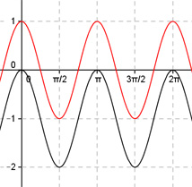

Aufgabe 269 Bestimmen Sie b und d für die dargestellten Graphen der Form y = a * cos (b * (x + c)) + d.  Abgelesen: Periode p = п --> 2п 2п |b| = ---- = ---- = 2 p п b = 2 oder -2 wegen cos(x) = cos(-x) acos(2(x + c)) + d oder acos(-2(x + c)) + d Verschiebung von Punkt (0|0) in (0|-1) --> Abgelesen: Verschiebung entlang der y-Achse um -1--> d = -1 acos(2(x + c)) - 1 oder acos(-2(x + c)) - 1 Abgelesen: Keine Verschiebung entlang y = -1 --> c = 0 acos(2x) - 1 oder acos(-2x) - 1 Abgelesen: |a| = 1 Keine Spiegelung an der x-Achse --> a = 1 --> y = cos(2x) - 1 oder y = cos(-2x) - 1 Zum Vergleich: cos(2x)